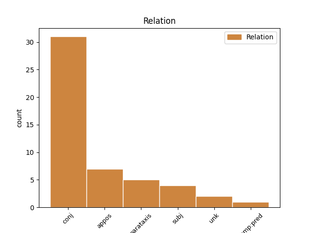
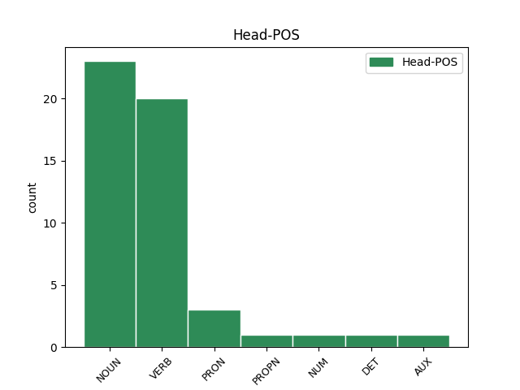
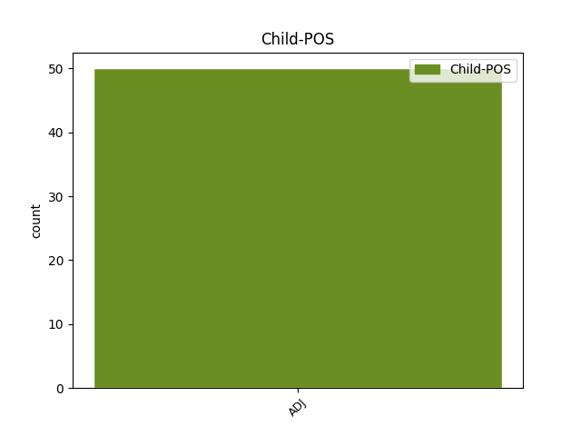

Distribution of features within this leaf



Agreement Rules sorted by frequency.
- When the dependent token is the conjunct(conj) of the head token, and the head token is VERB and the dependent token is ADJ.
1 Kad _ _ _ _ 0 _ _ _
2 klasifikacija _ _ _ _ 0 _ _ _
3 būtų _ _ _ _ 0 _ _ _
4 sėkminga _ _ _ _ 0 _ _ _
5 , _ _ _ _ 0 _ _ _
6 tiesiog _ _ _ _ 0 _ _ _
7 būtina _ _ _ _ 0 _ _ _
8 taikyti _ _ _ _ 0 _ _ _
9 lankstų _ _ _ _ 0 _ _ _
10 klasifikavimo _ _ _ _ 0 _ _ _
11 modelį _ _ _ _ 0 _ _ _
12 , _ _ _ _ 0 _ _ _
13 norint _ _ _ _ 0 _ _ _
14 apimti _ _ _ _ 0 _ _ _
15 naujas _ _ _ _ 0 _ _ _
16 , _ _ _ _ 0 _ _ _
17 kintančias kisti VERB vksm.dlv.veik.es.mot.dgs.G. Case=Acc|Definite=Ind|Gender=Fem|Number=Plur|Polarity=Pos|Tense=Pres|VerbForm=Part|Voice=Act 0 _ _ _
18 ar _ _ _ _ 0 _ _ _
19 neaiškias neaiškus ADJ bdv.nelygin.mot.dgs.G. Case=Acc|Definite=Ind|Degree=Pos|Gender=Fem|Number=Plur 17 conj _ _
20 kategorijas _ _ _ _ 0 _ _ _
21 . _ _ _ _ 0 _ _ _
1 2007 _ _ _ _ 0 _ _ _
2 m _ _ _ _ 0 _ _ _
3 . _ _ _ _ 0 _ _ _
4 Inspekcijos _ _ _ _ 0 _ _ _
5 veiklos _ _ _ _ 0 _ _ _
6 kryptys _ _ _ _ 0 _ _ _
7 : _ _ _ _ 0 _ _ _
8 tobulinti _ _ _ _ 0 _ _ _
9 teisinę _ _ _ _ 0 _ _ _
10 bazę _ _ _ _ 0 _ _ _
11 reglamentuojant _ _ _ _ 0 _ _ _
12 duomenų _ _ _ _ 0 _ _ _
13 apsaugą _ _ _ _ 0 _ _ _
14 ir _ _ _ _ 0 _ _ _
15 derinti _ _ _ _ 0 _ _ _
16 duomenų _ _ _ _ 0 _ _ _
17 valdytojų _ _ _ _ 0 _ _ _
18 pateiktus _ _ _ _ 0 _ _ _
19 teisės _ _ _ _ 0 _ _ _
20 aktus _ _ _ _ 0 _ _ _
21 ; _ _ _ _ 0 _ _ _
22 stiprinti _ _ _ _ 0 _ _ _
23 prevencinę _ _ _ _ 0 _ _ _
24 veiklą _ _ _ _ 0 _ _ _
25 , _ _ _ _ 0 _ _ _
26 Inspekcijos _ _ _ _ 0 _ _ _
27 iniciatyva _ _ _ _ 0 _ _ _
28 tiriant _ _ _ _ 0 _ _ _
29 ir _ _ _ _ 0 _ _ _
30 analizuojant _ _ _ _ 0 _ _ _
31 tam _ _ _ _ 0 _ _ _
32 tikras _ _ _ _ 0 _ _ _
33 apibrėžtas _ _ _ _ 0 _ _ _
34 duomenų _ _ _ _ 0 _ _ _
35 tvarkymo _ _ _ _ 0 _ _ _
36 sritis _ _ _ _ 0 _ _ _
37 , _ _ _ _ 0 _ _ _
38 bendradarbiaujant _ _ _ _ 0 _ _ _
39 su _ _ _ _ 0 _ _ _
40 duomenų _ _ _ _ 0 _ _ _
41 valdytojais _ _ _ _ 0 _ _ _
42 ; _ _ _ _ 0 _ _ _
43 didinti _ _ _ _ 0 _ _ _
44 Lietuvos _ _ _ _ 0 _ _ _
45 visuomenės _ _ _ _ 0 _ _ _
46 informuotumą _ _ _ _ 0 _ _ _
47 duomenų _ _ _ _ 0 _ _ _
48 apsaugos _ _ _ _ 0 _ _ _
49 srityje _ _ _ _ 0 _ _ _
50 , _ _ _ _ 0 _ _ _
51 teikiant _ _ _ _ 0 _ _ _
52 informaciją _ _ _ _ 0 _ _ _
53 visuomenei _ _ _ _ 0 _ _ _
54 aktualiais _ _ _ _ 0 _ _ _
55 duomenų _ _ _ _ 0 _ _ _
56 apsaugos _ _ _ _ 0 _ _ _
57 klausimais _ _ _ _ 0 _ _ _
58 , _ _ _ _ 0 _ _ _
59 konsultuojant _ _ _ _ 0 _ _ _
60 duomenų _ _ _ _ 0 _ _ _
61 subjektus _ _ _ _ 0 _ _ _
62 ir _ _ _ _ 0 _ _ _
63 valdytojus _ _ _ _ 0 _ _ _
64 , _ _ _ _ 0 _ _ _
65 rengiant _ _ _ _ 0 _ _ _
66 seminarus _ _ _ _ 0 _ _ _
67 ir _ _ _ _ 0 _ _ _
68 mokymus _ _ _ _ 0 _ _ _
69 ; _ _ _ _ 0 _ _ _
70 plėtoti _ _ _ _ 0 _ _ _
71 tarptautinį _ _ _ _ 0 _ _ _
72 bendradarbiavimą _ _ _ _ 0 _ _ _
73 pasinaudojant _ _ _ _ 0 _ _ _
74 Europos _ _ _ _ 0 _ _ _
75 Sąjungos _ _ _ _ 0 _ _ _
76 valstybių _ _ _ _ 0 _ _ _
77 ir _ _ _ _ 0 _ _ _
78 kitų _ _ _ _ 0 _ _ _
79 šalių _ _ _ _ 0 _ _ _
80 patirtimi _ _ _ _ 0 _ _ _
81 , _ _ _ _ 0 _ _ _
82 dalyvaujant _ _ _ _ 0 _ _ _
83 Europos _ _ _ _ 0 _ _ _
84 Sąjungos sąjunga NOUN dkt.mot.vns.K. Case=Gen|Gender=Fem|Number=Sing 0 _ _ _
85 ir _ _ _ _ 0 _ _ _
86 tarptautinėse tarptautinis ADJ bdv.nelygin.mot.dgs.Vt. Case=Loc|Definite=Ind|Degree=Pos|Gender=Fem|Number=Plur 84 conj _ _
87 darbo _ _ _ _ 0 _ _ _
88 grupėse _ _ _ _ 0 _ _ _
89 . _ _ _ _ 0 _ _ _
1 Tačiau _ _ _ _ 0 _ _ _
2 skaitant _ _ _ _ 0 _ _ _
3 R _ _ _ _ 0 _ _ _
4 . _ _ _ _ 0 _ _ _
5 Marcinkevičienės _ _ _ _ 0 _ _ _
6 knygą _ _ _ _ 0 _ _ _
7 tampa _ _ _ _ 0 _ _ _
8 akivaizdu _ _ _ _ 0 _ _ _
9 , _ _ _ _ 0 _ _ _
10 kad _ _ _ _ 0 _ _ _
11 ši _ _ _ _ 0 _ _ _
12 knyga _ _ _ _ 0 _ _ _
13 savo _ _ _ _ 0 _ _ _
14 apimtimi _ _ _ _ 0 _ _ _
15 ir _ _ _ _ 0 _ _ _
16 pasiektais _ _ _ _ 0 _ _ _
17 tikslais _ _ _ _ 0 _ _ _
18 , _ _ _ _ 0 _ _ _
19 be _ _ _ _ 0 _ _ _
20 abejonės _ _ _ _ 0 _ _ _
21 , _ _ _ _ 0 _ _ _
22 išeina _ _ _ _ 0 _ _ _
23 už _ _ _ _ 0 _ _ _
24 mokomosios _ _ _ _ 0 _ _ _
25 knygos _ _ _ _ 0 _ _ _
26 rėmų _ _ _ _ 0 _ _ _
27 ir _ _ _ _ 0 _ _ _
28 labiau _ _ _ _ 0 _ _ _
29 primena _ _ _ _ 0 _ _ _
30 monografiją _ _ _ _ 0 _ _ _
31 – _ _ _ _ 0 _ _ _
32 knygoje _ _ _ _ 0 _ _ _
33 aptariama _ _ _ _ 0 _ _ _
34 gausybė _ _ _ _ 0 _ _ _
35 lietuvių _ _ _ _ 0 _ _ _
36 kalbotyroje _ _ _ _ 0 _ _ _
37 mažai _ _ _ _ 0 _ _ _
38 analizuotų _ _ _ _ 0 _ _ _
39 reiškinių _ _ _ _ 0 _ _ _
40 , _ _ _ _ 0 _ _ _
41 teorinė _ _ _ _ 0 _ _ _
42 apžvalga _ _ _ _ 0 _ _ _
43 , _ _ _ _ 0 _ _ _
44 nors _ _ _ _ 0 _ _ _
45 ir _ _ _ _ 0 _ _ _
46 pateikta _ _ _ _ 0 _ _ _
47 labai _ _ _ _ 0 _ _ _
48 glaustai _ _ _ _ 0 _ _ _
49 , _ _ _ _ 0 _ _ _
50 yra _ _ _ _ 0 _ _ _
51 itin _ _ _ _ 0 _ _ _
52 detali _ _ _ _ 0 _ _ _
53 ir _ _ _ _ 0 _ _ _
54 plati _ _ _ _ 0 _ _ _
55 , _ _ _ _ 0 _ _ _
56 o _ _ _ _ 0 _ _ _
57 lietuviškų _ _ _ _ 0 _ _ _
58 spaudos _ _ _ _ 0 _ _ _
59 žanrų _ _ _ _ 0 _ _ _
60 klasifikacija klasifikacija NOUN dkt.mot.vns.V. Case=Nom|Gender=Fem|Number=Sing 0 _ _ _
61 – _ _ _ _ 0 _ _ _
62 sisteminga sistemingas ADJ bdv.nelygin.mot.vns.V. Case=Nom|Definite=Ind|Degree=Pos|Gender=Fem|Number=Sing 60 appos _ SpaceAfter=No
63 , _ _ _ _ 0 _ _ _
64 pagrįsta _ _ _ _ 0 _ _ _
65 aiškiais _ _ _ _ 0 _ _ _
66 kriterijais _ _ _ _ 0 _ _ _
67 , _ _ _ _ 0 _ _ _
68 nuosekli _ _ _ _ 0 _ _ _
69 ir _ _ _ _ 0 _ _ _
70 ypač _ _ _ _ 0 _ _ _
71 išsami _ _ _ _ 0 _ _ _
72 . _ _ _ _ 0 _ _ _
1 4 _ _ _ _ 0 _ _ _
2 . _ _ _ _ 0 _ _ _
3 Įmonės _ _ _ _ 0 _ _ _
4 gali _ _ _ _ 0 _ _ _
5 deklaruoti _ _ _ _ 0 _ _ _
6 esančios _ _ _ _ 0 _ _ _
7 vidutinės vidutinis ADJ bdv.nelygin.mot.dgs.V. Case=Nom|Definite=Ind|Degree=Pos|Gender=Fem|Number=Plur 13 subj _ SpaceAfter=No
8 , _ _ _ _ 0 _ _ _
9 mažos _ _ _ _ 0 _ _ _
10 ar _ _ _ _ 0 _ _ _
11 labai _ _ _ _ 0 _ _ _
12 mažos _ _ _ _ 0 _ _ _
13 įmonės įmonė NOUN dkt.mot.dgs.V. Case=Nom|Gender=Fem|Number=Plur 0 _ _ _
14 nuo _ _ _ _ 0 _ _ _
15 jų _ _ _ _ 0 _ _ _
16 įsteigimo _ _ _ _ 0 _ _ _
17 dienos _ _ _ _ 0 _ _ _
18 . _ _ _ _ 0 _ _ _
1 Dar _ _ _ _ 0 _ _ _
2 vienas _ _ _ _ 0 _ _ _
3 svarbus _ _ _ _ 0 _ _ _
4 ankstesnių _ _ _ _ 0 _ _ _
5 klasifikacijų _ _ _ _ 0 _ _ _
6 trūkumas _ _ _ _ 0 _ _ _
7 , _ _ _ _ 0 _ _ _
8 kurį _ _ _ _ 0 _ _ _
9 pastebi _ _ _ _ 0 _ _ _
10 R _ _ _ _ 0 _ _ _
11 . _ _ _ _ 0 _ _ _
12 Marcinkevičienė _ _ _ _ 0 _ _ _
13 , _ _ _ _ 0 _ _ _
14 yra _ _ _ _ 0 _ _ _
15 hierarchinis _ _ _ _ 0 _ _ _
16 pristatomų _ _ _ _ 0 _ _ _
17 žanrų _ _ _ _ 0 _ _ _
18 netolygumas _ _ _ _ 0 _ _ _
19 : _ _ _ _ 0 _ _ _
20 kai _ _ _ _ 0 _ _ _
21 kurios _ _ _ _ 0 _ _ _
22 kategorijos _ _ _ _ 0 _ _ _
23 yra _ _ _ _ 0 _ _ _
24 per _ _ _ _ 0 _ _ _
25 plačios _ _ _ _ 0 _ _ _
26 , _ _ _ _ 0 _ _ _
27 o _ _ _ _ 0 _ _ _
28 kai kai PRON sampl.įv.mot.dgs.V. Case=Nom|Definite=Ind|Gender=Fem|Hyph=Yes|Number=Plur|PronType=Ind 0 _ _ _
29 kurios _ _ _ _ 0 _ _ _
30 – _ _ _ _ 0 _ _ _
31 per _ _ _ _ 0 _ _ _
32 siauros siauras ADJ bdv.nelygin.mot.dgs.V. Case=Nom|Definite=Ind|Degree=Pos|Gender=Fem|Number=Plur 28 appos _ SpaceAfter=No
33 , _ _ _ _ 0 _ _ _
34 kad _ _ _ _ 0 _ _ _
35 galėtų _ _ _ _ 0 _ _ _
36 vadintis _ _ _ _ 0 _ _ _
37 žanrais _ _ _ _ 0 _ _ _
38 . _ _ _ _ 0 _ _ _
1 Keista keistas ADJ bdv.nelygin.bev. Definite=Ind|Degree=Pos|Gender=Neut 6 parataxis _ SpaceAfter=No
2 , _ _ _ _ 0 _ _ _
3 bet _ _ _ _ 0 _ _ _
4 tokio _ _ _ _ 0 _ _ _
5 akcentavimo _ _ _ _ 0 _ _ _
6 nevengiama nevengti VERB vksm.dlv.neig.neveik.es.bev. Definite=Ind|Gender=Neut|Polarity=Neg|Tense=Pres|VerbForm=Part|Voice=Pass 0 _ _ _
7 ir _ _ _ _ 0 _ _ _
8 svetimose _ _ _ _ 0 _ _ _
9 citatose _ _ _ _ 0 _ _ _
10 , _ _ _ _ 0 _ _ _
11 o _ _ _ _ 0 _ _ _
12 mokslinėje _ _ _ _ 0 _ _ _
13 literatūroje _ _ _ _ 0 _ _ _
14 įprastos _ _ _ _ 0 _ _ _
15 pastabos _ _ _ _ 0 _ _ _
16 , _ _ _ _ 0 _ _ _
17 kas _ _ _ _ 0 _ _ _
18 išryškino _ _ _ _ 0 _ _ _
19 vieną _ _ _ _ 0 _ _ _
20 ar _ _ _ _ 0 _ _ _
21 kitą _ _ _ _ 0 _ _ _
22 teiginį _ _ _ _ 0 _ _ _
23 - _ _ _ _ 0 _ _ _
24 citatos _ _ _ _ 0 _ _ _
25 autorius _ _ _ _ 0 _ _ _
26 ar _ _ _ _ 0 _ _ _
27 istorikai _ _ _ _ 0 _ _ _
28 , _ _ _ _ 0 _ _ _
29 dažniausiai _ _ _ _ 0 _ _ _
30 nėra _ _ _ _ 0 _ _ _
31 . _ _ _ _ 0 _ _ _
1 Mes _ _ _ _ 0 _ _ _
2 galime _ _ _ _ 0 _ _ _
3 į _ _ _ _ 0 _ _ _
4 bedugnę _ _ _ _ 0 _ _ _
5 kristi _ _ _ _ 0 _ _ _
6 pirmieji pirmas NUM sktv.raid.kelint.įvardž.vyr.dgs.V. Case=Nom|Definite=Def|Gender=Masc|Number=Plur|NumForm=Word|NumType=Ord 0 _ _ _
7 arba _ _ _ _ 0 _ _ _
8 paskutiniai paskutinis ADJ bdv.nelygin.vyr.dgs.V. Case=Nom|Definite=Ind|Degree=Pos|Gender=Masc|Number=Plur 6 conj _ _
9 ir _ _ _ _ 0 _ _ _
10 taip _ _ _ _ 0 _ _ _
11 pat _ _ _ _ 0 _ _ _
12 iš _ _ _ _ 0 _ _ _
13 jos _ _ _ _ 0 _ _ _
14 ropštis _ _ _ _ 0 _ _ _
15 . _ _ _ _ 0 _ _ _
1 Tai tas DET įv.bev. Definite=Ind|Gender=Neut|PronType=Dem 0 _ _ _
2 - _ _ _ _ 0 _ _ _
3 nenaudinga nenaudingas ADJ bdv.nelygin.bev. Definite=Ind|Degree=Pos|Gender=Neut 1 appos _ _
4 valstybei _ _ _ _ 0 _ _ _
5 . _ _ _ _ 0 _ _ _
1 Tarsi _ _ _ _ 0 _ _ _
2 egzistuotų _ _ _ _ 0 _ _ _
3 du _ _ _ _ 0 _ _ _
4 materialaus _ _ _ _ 0 _ _ _
5 pasaulio _ _ _ _ 0 _ _ _
6 suvokimai _ _ _ _ 0 _ _ _
7 : _ _ _ _ 0 _ _ _
8 vienas vienas PRON įv.vyr.vns.V. Case=Nom|Definite=Ind|Gender=Masc|Number=Sing|PronType=Ind 0 _ _ _
9 , _ _ _ _ 0 _ _ _
10 kurį _ _ _ _ 0 _ _ _
11 galiu _ _ _ _ 0 _ _ _
12 patikrinti _ _ _ _ 0 _ _ _
13 pasičiupinėdama _ _ _ _ 0 _ _ _
14 save _ _ _ _ 0 _ _ _
15 , _ _ _ _ 0 _ _ _
16 kitas _ _ _ _ 0 _ _ _
17 – _ _ _ _ 0 _ _ _
18 ne _ _ _ _ 0 _ _ _
19 mažiau _ _ _ _ 0 _ _ _
20 tikras tikras ADJ bdv.nelygin.vyr.vns.V. Case=Nom|Definite=Ind|Degree=Pos|Gender=Masc|Number=Sing 8 conj _ SpaceAfter=No
21 , _ _ _ _ 0 _ _ _
22 bet _ _ _ _ 0 _ _ _
23 esantis _ _ _ _ 0 _ _ _
24 už _ _ _ _ 0 _ _ _
25 įprastinių _ _ _ _ 0 _ _ _
26 pojūčių _ _ _ _ 0 _ _ _
27 ribos _ _ _ _ 0 _ _ _
28 , _ _ _ _ 0 _ _ _
29 apie _ _ _ _ 0 _ _ _
30 kurį _ _ _ _ 0 _ _ _
31 man _ _ _ _ 0 _ _ _
32 praneša _ _ _ _ 0 _ _ _
33 vidinė _ _ _ _ 0 _ _ _
34 akis _ _ _ _ 0 _ _ _
35 , _ _ _ _ 0 _ _ _
36 reginti _ _ _ _ 0 _ _ _
37 mano _ _ _ _ 0 _ _ _
38 kūną _ _ _ _ 0 _ _ _
39 susiliejant _ _ _ _ 0 _ _ _
40 su _ _ _ _ 0 _ _ _
41 beribe _ _ _ _ 0 _ _ _
42 erdve _ _ _ _ 0 _ _ _
43 . _ _ _ _ 0 _ _ _
1 Nurodytasis _ _ _ _ 0 _ _ _
2 ( _ _ _ _ 0 _ _ _
3 p _ _ _ _ 0 _ _ _
4 . _ _ _ _ 0 _ _ _
5 68 _ _ _ _ 0 _ _ _
6 ) _ _ _ _ 0 _ _ _
7 tokių _ _ _ _ 0 _ _ _
8 pavyzdžių _ _ _ _ 0 _ _ _
9 sąrašas _ _ _ _ 0 _ _ _
10 yra _ _ _ _ 0 _ _ _
11 ilgesnis _ _ _ _ 0 _ _ _
12 , _ _ _ _ 0 _ _ _
13 gaila _ _ _ _ 0 _ _ _
14 , _ _ _ _ 0 _ _ _
15 kad _ _ _ _ 0 _ _ _
16 apsiribota _ _ _ _ 0 _ _ _
17 tik _ _ _ _ 0 _ _ _
18 kai _ _ _ _ 0 _ _ _
19 kurių _ _ _ _ 0 _ _ _
20 jų _ _ _ _ 0 _ _ _
21 įvardijimu _ _ _ _ 0 _ _ _
22 , _ _ _ _ 0 _ _ _
23 bet _ _ _ _ 0 _ _ _
24 ne _ _ _ _ 0 _ _ _
25 pristatymu _ _ _ _ 0 _ _ _
26 skaitytojui _ _ _ _ 0 _ _ _
27 ; _ _ _ _ 0 _ _ _
28 manytume _ _ _ _ 0 _ _ _
29 , _ _ _ _ 0 _ _ _
30 kad _ _ _ _ 0 _ _ _
31 tai _ _ _ _ 0 _ _ _
32 būtų _ _ _ _ 0 _ _ _
33 buvę būti AUX vksm.dlv.veik.būt-k.bev. Aspect=Perf|Definite=Ind|Gender=Neut|Polarity=Pos|Tense=Past|VerbForm=Part|Voice=Act 0 _ _ _
34 tikslinga tikslingas ADJ bdv.nelygin.bev. Definite=Ind|Degree=Pos|Gender=Neut 33 comp:pred _ _
35 padaryti _ _ _ _ 0 _ _ _
36 , _ _ _ _ 0 _ _ _
37 juo _ _ _ _ 0 _ _ _
38 labiau _ _ _ _ 0 _ _ _
39 , _ _ _ _ 0 _ _ _
40 kad _ _ _ _ 0 _ _ _
41 yra _ _ _ _ 0 _ _ _
42 ir _ _ _ _ 0 _ _ _
43 atitinkamos _ _ _ _ 0 _ _ _
44 šios _ _ _ _ 0 _ _ _
45 knygos _ _ _ _ 0 _ _ _
46 autorių _ _ _ _ 0 _ _ _
47 publikacijos _ _ _ _ 0 _ _ _
48 . _ _ _ _ 0 _ _ _
1 Vyras _ _ _ _ 0 _ _ _
2 , _ _ _ _ 0 _ _ _
3 išgirdęs _ _ _ _ 0 _ _ _
4 mano _ _ _ _ 0 _ _ _
5 sarkastišką _ _ _ _ 0 _ _ _
6 prunkštimą _ _ _ _ 0 _ _ _
7 , _ _ _ _ 0 _ _ _
8 kartu _ _ _ _ 0 _ _ _
9 su _ _ _ _ 0 _ _ _
10 erekcija _ _ _ _ 0 _ _ _
11 praranda _ _ _ _ 0 _ _ _
12 kretinizmo _ _ _ _ 0 _ _ _
13 šarvus _ _ _ _ 0 _ _ _
14 , _ _ _ _ 0 _ _ _
15 tampa _ _ _ _ 0 _ _ _
16 pažeidžiamas pažeisti VERB vksm.dlv.neveik.es.vyr.vns.V. Case=Nom|Definite=Ind|Gender=Masc|Number=Sing|Polarity=Pos|Tense=Pres|VerbForm=Part|Voice=Pass 0 _ _ _
17 ir _ _ _ _ 0 _ _ _
18 jaukus _ _ _ _ 0 _ _ _
19 , _ _ _ _ 0 _ _ _
20 kartais _ _ _ _ 0 _ _ _
21 netgi _ _ _ _ 0 _ _ _
22 apgailėtinas apgailėtinas ADJ bdv.nelygin.vyr.vns.V. Case=Nom|Definite=Ind|Degree=Pos|Gender=Masc|Number=Sing 16 subj _ SpaceAfter=No
23 , _ _ _ _ 0 _ _ _
24 valandėlę _ _ _ _ 0 _ _ _
25 mudu _ _ _ _ 0 _ _ _
26 netgi _ _ _ _ 0 _ _ _
27 sutariame _ _ _ _ 0 _ _ _
28 , _ _ _ _ 0 _ _ _
29 sutampame _ _ _ _ 0 _ _ _
30 vienas _ _ _ _ 0 _ _ _
31 su _ _ _ _ 0 _ _ _
32 kitu _ _ _ _ 0 _ _ _
33 , _ _ _ _ 0 _ _ _
34 bet _ _ _ _ 0 _ _ _
35 štai _ _ _ _ 0 _ _ _
36 jis _ _ _ _ 0 _ _ _
37 ir _ _ _ _ 0 _ _ _
38 vėl _ _ _ _ 0 _ _ _
39 ima _ _ _ _ 0 _ _ _
40 urgzti _ _ _ _ 0 _ _ _
41 , _ _ _ _ 0 _ _ _
42 judėti _ _ _ _ 0 _ _ _
43 , _ _ _ _ 0 _ _ _
44 raitytis _ _ _ _ 0 _ _ _
45 , _ _ _ _ 0 _ _ _
46 gašliai _ _ _ _ 0 _ _ _
47 pažeminęs _ _ _ _ 0 _ _ _
48 balsą _ _ _ _ 0 _ _ _
49 kažką _ _ _ _ 0 _ _ _
50 šnabžda _ _ _ _ 0 _ _ _
51 partnerei _ _ _ _ 0 _ _ _
52 , _ _ _ _ 0 _ _ _
53 mane _ _ _ _ 0 _ _ _
54 bjauriu _ _ _ _ 0 _ _ _
55 nuogu _ _ _ _ 0 _ _ _
56 užpakaliu _ _ _ _ 0 _ _ _
57 stumdamas _ _ _ _ 0 _ _ _
58 iš _ _ _ _ 0 _ _ _
59 lovos _ _ _ _ 0 _ _ _
60 , _ _ _ _ 0 _ _ _
61 kol _ _ _ _ 0 _ _ _
62 pagaliau _ _ _ _ 0 _ _ _
63 iškrentu _ _ _ _ 0 _ _ _
64 iš _ _ _ _ 0 _ _ _
65 jos _ _ _ _ 0 _ _ _
66 ir _ _ _ _ 0 _ _ _
67 netenku _ _ _ _ 0 _ _ _
68 sąmonės _ _ _ _ 0 _ _ _
69 iki _ _ _ _ 0 _ _ _
70 ryto _ _ _ _ 0 _ _ _
71 , _ _ _ _ 0 _ _ _
72 su _ _ _ _ 0 _ _ _
73 viltimi _ _ _ _ 0 _ _ _
74 , _ _ _ _ 0 _ _ _
75 kad _ _ _ _ 0 _ _ _
76 vieną _ _ _ _ 0 _ _ _
77 sykį _ _ _ _ 0 _ _ _
78 visa _ _ _ _ 0 _ _ _
79 tai _ _ _ _ 0 _ _ _
80 baigsis _ _ _ _ 0 _ _ _
81 , _ _ _ _ 0 _ _ _
82 nes _ _ _ _ 0 _ _ _
83 daiktas _ _ _ _ 0 _ _ _
84 , _ _ _ _ 0 _ _ _
85 vadinamas _ _ _ _ 0 _ _ _
86 vyru _ _ _ _ 0 _ _ _
87 , _ _ _ _ 0 _ _ _
88 labai _ _ _ _ 0 _ _ _
89 glaudžiai _ _ _ _ 0 _ _ _
90 susijęs _ _ _ _ 0 _ _ _
91 su _ _ _ _ 0 _ _ _
92 daiktu _ _ _ _ 0 _ _ _
93 , _ _ _ _ 0 _ _ _
94 kuris _ _ _ _ 0 _ _ _
95 vadinamas _ _ _ _ 0 _ _ _
96 kūnu _ _ _ _ 0 _ _ _
97 , _ _ _ _ 0 _ _ _
98 o _ _ _ _ 0 _ _ _
99 juk _ _ _ _ 0 _ _ _
100 nieko _ _ _ _ 0 _ _ _
101 pasaulyje _ _ _ _ 0 _ _ _
102 nėra _ _ _ _ 0 _ _ _
103 paprastesnio _ _ _ _ 0 _ _ _
104 už _ _ _ _ 0 _ _ _
105 tiesą _ _ _ _ 0 _ _ _
106 , _ _ _ _ 0 _ _ _
107 kad _ _ _ _ 0 _ _ _
108 visi _ _ _ _ 0 _ _ _
109 daiktai _ _ _ _ 0 _ _ _
110 dėvisi _ _ _ _ 0 _ _ _
111 . _ _ _ _ 0 _ _ _
1 5 _ _ _ _ 0 _ _ _
2 . _ _ _ _ 0 _ _ _
3 Lengvatinė _ _ _ _ 0 _ _ _
4 paskola _ _ _ _ 0 _ _ _
5 – _ _ _ _ 0 _ _ _
6 paskola paskola NOUN dkt.mot.vns.V. Case=Nom|Gender=Fem|Number=Sing 0 _ _ _
7 smulkiojo _ _ _ _ 0 _ _ _
8 ir _ _ _ _ 0 _ _ _
9 vidutinio _ _ _ _ 0 _ _ _
10 verslo _ _ _ _ 0 _ _ _
11 subjektams _ _ _ _ 0 _ _ _
12 palankesnėmis _ _ _ _ 0 _ _ _
13 sąlygomis _ _ _ _ 0 _ _ _
14 , _ _ _ _ 0 _ _ _
15 negu _ _ _ _ 0 _ _ _
16 siūloma _ _ _ _ 0 _ _ _
17 komercinėje _ _ _ _ 0 _ _ _
18 paskolų _ _ _ _ 0 _ _ _
19 rinkoje _ _ _ _ 0 _ _ _
20 ( _ _ _ _ 0 _ _ _
21 mažesnė mažas ADJ bdv.aukšt.mot.vns.V. Case=Nom|Definite=Ind|Degree=Cmp|Gender=Fem|Number=Sing 6 parataxis _ _
22 negu _ _ _ _ 0 _ _ _
23 vidutinio _ _ _ _ 0 _ _ _
24 metinio _ _ _ _ 0 _ _ _
25 rinkos _ _ _ _ 0 _ _ _
26 palūkanų _ _ _ _ 0 _ _ _
27 dydžio _ _ _ _ 0 _ _ _
28 palūkanų _ _ _ _ 0 _ _ _
29 norma _ _ _ _ 0 _ _ _
30 , _ _ _ _ 0 _ _ _
31 valstybė _ _ _ _ 0 _ _ _
32 ar _ _ _ _ 0 _ _ _
33 savivaldybė _ _ _ _ 0 _ _ _
34 kompensuoja _ _ _ _ 0 _ _ _
35 dalį _ _ _ _ 0 _ _ _
36 paskolos _ _ _ _ 0 _ _ _
37 palūkanų _ _ _ _ 0 _ _ _
38 ir _ _ _ _ 0 _ _ _
39 kt _ _ _ _ 0 _ _ _
40 . _ _ _ _ 0 _ _ _
41 ) _ _ _ _ 0 _ _ _
42 . _ _ _ _ 0 _ _ _
Disagree Examples:
1 Knyga _ _ _ _ 0 _ _ _
2 paremta _ _ _ _ 0 _ _ _
3 išankstiniu _ _ _ _ 0 _ _ _
4 jos _ _ _ _ 0 _ _ _
5 autorių _ _ _ _ 0 _ _ _
6 ( _ _ _ _ 0 _ _ _
7 viso _ _ _ _ 0 _ _ _
8 būrio _ _ _ _ 0 _ _ _
9 jaunųjų _ _ _ _ 0 _ _ _
10 mokslininkų _ _ _ _ 0 _ _ _
11 , _ _ _ _ 0 _ _ _
12 atstovaujančių _ _ _ _ 0 _ _ _
13 Viešosios _ _ _ _ 0 _ _ _
14 politikos _ _ _ _ 0 _ _ _
15 ir _ _ _ _ 0 _ _ _
16 vadybos _ _ _ _ 0 _ _ _
17 institutui _ _ _ _ 0 _ _ _
18 ) _ _ _ _ 0 _ _ _
19 įsitikinimu _ _ _ _ 0 _ _ _
20 , _ _ _ _ 0 _ _ _
21 kad _ _ _ _ 0 _ _ _
22 „ _ _ _ _ 0 _ _ _
23 emigracija _ _ _ _ 0 _ _ _
24 nėra _ _ _ _ 0 _ _ _
25 vienos _ _ _ _ 0 _ _ _
26 krypties _ _ _ _ 0 _ _ _
27 eismas _ _ _ _ 0 _ _ _
28 , _ _ _ _ 0 _ _ _
29 nes _ _ _ _ 0 _ _ _
30 didelė _ _ _ _ 0 _ _ _
31 dalis _ _ _ _ 0 _ _ _
32 migrantų migrantas NOUN dkt.vyr.dgs.K. Case=Gen|Gender=Masc|Number=Plur 0 _ _ _
33 [ _ _ _ _ 0 _ _ _
34 svarbu svarbus ADJ bdv.nelygin.bev. Definite=Ind|Degree=Pos|Gender=Neut 32 parataxis _ SpaceAfter=No
35 , _ _ _ _ 0 _ _ _
36 kad _ _ _ _ 0 _ _ _
37 pradedamas _ _ _ _ 0 _ _ _
38 vartoti _ _ _ _ 0 _ _ _
39 būtent _ _ _ _ 0 _ _ _
40 šis _ _ _ _ 0 _ _ _
41 visapusišką _ _ _ _ 0 _ _ _
42 migravimą _ _ _ _ 0 _ _ _
43 apimantis _ _ _ _ 0 _ _ _
44 terminas _ _ _ _ 0 _ _ _
45 – _ _ _ _ 0 _ _ _
46 V _ _ _ _ 0 _ _ _
47 . _ _ _ _ 0 _ _ _
48 Č _ _ _ _ 0 _ _ _
49 . _ _ _ _ 0 _ _ _
50 ] _ _ _ _ 0 _ _ _
51 išvyksta _ _ _ _ 0 _ _ _
52 laikinai _ _ _ _ 0 _ _ _
53 ir _ _ _ _ 0 _ _ _
54 sugrįžta _ _ _ _ 0 _ _ _
55 , _ _ _ _ 0 _ _ _
56 nors _ _ _ _ 0 _ _ _
57 kai _ _ _ _ 0 _ _ _
58 kurie _ _ _ _ 0 _ _ _
59 emigruoja _ _ _ _ 0 _ _ _
60 pakartotinai _ _ _ _ 0 _ _ _
61 ir _ _ _ _ 0 _ _ _
62 vėl _ _ _ _ 0 _ _ _
63 sugrįžta _ _ _ _ 0 _ _ _
64 net _ _ _ _ 0 _ _ _
65 po _ _ _ _ 0 _ _ _
66 keletą _ _ _ _ 0 _ _ _
67 kartų _ _ _ _ 0 _ _ _
68 “ _ _ _ _ 0 _ _ _
69 ( _ _ _ _ 0 _ _ _
70 p _ _ _ _ 0 _ _ _
71 . _ _ _ _ 0 _ _ _
72 8 _ _ _ _ 0 _ _ _
73 ) _ _ _ _ 0 _ _ _
74 . _ _ _ _ 0 _ _ _
1 Pabrėžtina _ _ _ _ 0 _ _ _
2 , _ _ _ _ 0 _ _ _
3 kad _ _ _ _ 0 _ _ _
4 knygos _ _ _ _ 0 _ _ _
5 struktūra _ _ _ _ 0 _ _ _
6 nuosekli nuoseklus ADJ bdv.nelygin.mot.vns.V. Case=Nom|Definite=Ind|Degree=Pos|Gender=Fem|Number=Sing 8 subj _ _
7 – _ _ _ _ 0 _ _ _
8 pradedama pradėti VERB vksm.dlv.neveik.es.bev. Definite=Ind|Gender=Neut|Polarity=Pos|Tense=Pres|VerbForm=Part|Voice=Pass 0 _ _ _
9 nuo _ _ _ _ 0 _ _ _
10 teorijų _ _ _ _ 0 _ _ _
11 apžvalgos _ _ _ _ 0 _ _ _
12 , _ _ _ _ 0 _ _ _
13 metodologijos _ _ _ _ 0 _ _ _
14 , _ _ _ _ 0 _ _ _
15 konceptualaus _ _ _ _ 0 _ _ _
16 tyrimo _ _ _ _ 0 _ _ _
17 modelio _ _ _ _ 0 _ _ _
18 pristatymo _ _ _ _ 0 _ _ _
19 , _ _ _ _ 0 _ _ _
20 pereinama _ _ _ _ 0 _ _ _
21 prie _ _ _ _ 0 _ _ _
22 grįžtamosios _ _ _ _ 0 _ _ _
23 migracijos _ _ _ _ 0 _ _ _
24 demografinių _ _ _ _ 0 _ _ _
25 statistinių _ _ _ _ 0 _ _ _
26 parametrų _ _ _ _ 0 _ _ _
27 ir _ _ _ _ 0 _ _ _
28 tendencijų _ _ _ _ 0 _ _ _
29 nuženklinimo _ _ _ _ 0 _ _ _
30 . _ _ _ _ 0 _ _ _
1 Kai _ _ _ _ 0 _ _ _
2 į _ _ _ _ 0 _ _ _
3 savo _ _ _ _ 0 _ _ _
4 klausimą _ _ _ _ 0 _ _ _
5 gaunate _ _ _ _ 0 _ _ _
6 , _ _ _ _ 0 _ _ _
7 tikėtina tikėtinas ADJ bdv.nelygin.bev. Definite=Ind|Degree=Pos|Gender=Neut 10 parataxis _ SpaceAfter=No
8 , _ _ _ _ 0 _ _ _
9 labai _ _ _ _ 0 _ _ _
10 skaudinantį skaudinti VERB vksm.dlv.veik.es.vyr.vns.G. Case=Acc|Definite=Ind|Gender=Masc|Number=Sing|Polarity=Pos|Tense=Pres|VerbForm=Part|Voice=Act 0 _ _ _
11 jus _ _ _ _ 0 _ _ _
12 atsakymą _ _ _ _ 0 _ _ _
13 , _ _ _ _ 0 _ _ _
14 nebauskite _ _ _ _ 0 _ _ _
15 savo _ _ _ _ 0 _ _ _
16 partnerio _ _ _ _ 0 _ _ _
17 už _ _ _ _ 0 _ _ _
18 atvirumą _ _ _ _ 0 _ _ _
19 . _ _ _ _ 0 _ _ _
1 Nepretenduojant _ _ _ _ 0 _ _ _
2 į _ _ _ _ 0 _ _ _
3 išsamesnį _ _ _ _ 0 _ _ _
4 šio _ _ _ _ 0 _ _ _
5 diskurso _ _ _ _ 0 _ _ _
6 pristatymą _ _ _ _ 0 _ _ _
7 , _ _ _ _ 0 _ _ _
8 vis _ _ _ _ 0 _ _ _
9 tik _ _ _ _ 0 _ _ _
10 reikėtų _ _ _ _ 0 _ _ _
11 pažymėti _ _ _ _ 0 _ _ _
12 , _ _ _ _ 0 _ _ _
13 jog _ _ _ _ 0 _ _ _
14 šeimos _ _ _ _ 0 _ _ _
15 ( _ _ _ _ 0 _ _ _
16 kaip _ _ _ _ 0 _ _ _
17 ir _ _ _ _ 0 _ _ _
18 kitų _ _ _ _ 0 _ _ _
19 sričių _ _ _ _ 0 _ _ _
20 ) _ _ _ _ 0 _ _ _
21 tyrimai _ _ _ _ 0 _ _ _
22 mūsų _ _ _ _ 0 _ _ _
23 šalyje _ _ _ _ 0 _ _ _
24 buvo _ _ _ _ 0 _ _ _
25 ( _ _ _ _ 0 _ _ _
26 ir _ _ _ _ 0 _ _ _
27 tebėra _ _ _ _ 0 _ _ _
28 ) _ _ _ _ 0 _ _ _
29 glaudžiai _ _ _ _ 0 _ _ _
30 susiję _ _ _ _ 0 _ _ _
31 su _ _ _ _ 0 _ _ _
32 galimybėmis _ _ _ _ 0 _ _ _
33 dalyvauti _ _ _ _ 0 _ _ _
34 įvairiuose _ _ _ _ 0 _ _ _
35 tarptautiniuose _ _ _ _ 0 _ _ _
36 projektuose _ _ _ _ 0 _ _ _
37 ( _ _ _ _ 0 _ _ _
38 tai _ _ _ _ 0 _ _ _
39 užtikrina _ _ _ _ 0 _ _ _
40 vykdomų _ _ _ _ 0 _ _ _
41 tyrimų _ _ _ _ 0 _ _ _
42 finansavimą _ _ _ _ 0 _ _ _
43 , _ _ _ _ 0 _ _ _
44 rezultatų _ _ _ _ 0 _ _ _
45 palyginamumą _ _ _ _ 0 _ _ _
46 Europos Europa PROPN dkt.tikr.mot.vns.K. Case=Gen|Gender=Fem|Number=Sing 0 _ _ _
47 ar _ _ _ _ 0 _ _ _
48 netgi _ _ _ _ 0 _ _ _
49 platesniame platus ADJ bdv.aukšt.vyr.vns.Vt. Case=Loc|Definite=Ind|Degree=Cmp|Gender=Masc|Number=Sing 46 conj _ _
50 kontekste _ _ _ _ 0 _ _ _
51 ir _ _ _ _ 0 _ _ _
52 pan _ _ _ _ 0 _ _ _
53 . _ _ _ _ 0 _ _ _
54 ) _ _ _ _ 0 _ _ _
55 . _ _ _ _ 0 _ _ _
1 Šiame _ _ _ _ 0 _ _ _
2 sąraše _ _ _ _ 0 _ _ _
3 pasigendama pasigesti VERB vksm.dlv.sngr.neveik.es.bev. Definite=Ind|Gender=Neut|Polarity=Pos|Reflex=Yes|Tense=Pres|VerbForm=Part|Voice=Pass 0 _ _ _
4 kitų _ _ _ _ 0 _ _ _
5 vertingų vertingas ADJ bdv.nelygin.vyr.dgs.K. Case=Gen|Definite=Ind|Degree=Pos|Gender=Masc|Number=Plur 3 unk _ _
6 ir _ _ _ _ 0 _ _ _
7 aktualių _ _ _ _ 0 _ _ _
8 knygos _ _ _ _ 0 _ _ _
9 autorių _ _ _ _ 0 _ _ _
10 , _ _ _ _ 0 _ _ _
11 su _ _ _ _ 0 _ _ _
12 kuriais _ _ _ _ 0 _ _ _
13 skaitytojui _ _ _ _ 0 _ _ _
14 , _ _ _ _ 0 _ _ _
15 besidominčiam _ _ _ _ 0 _ _ _
16 šeimos _ _ _ _ 0 _ _ _
17 sociologija _ _ _ _ 0 _ _ _
18 ir _ _ _ _ 0 _ _ _
19 kokybiniais _ _ _ _ 0 _ _ _
20 tyrimų _ _ _ _ 0 _ _ _
21 metodais _ _ _ _ 0 _ _ _
22 tikrai _ _ _ _ 0 _ _ _
23 pravartu _ _ _ _ 0 _ _ _
24 susipažinti _ _ _ _ 0 _ _ _
25 . _ _ _ _ 0 _ _ _